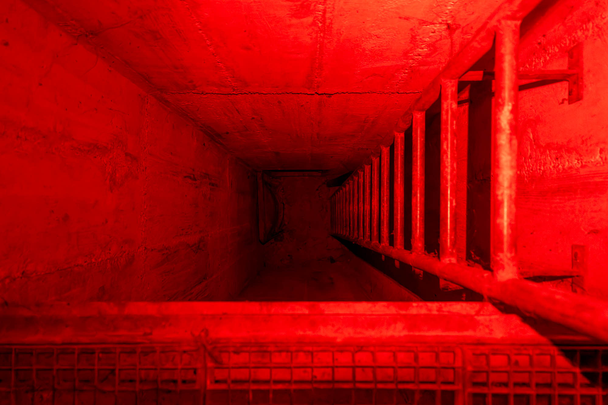
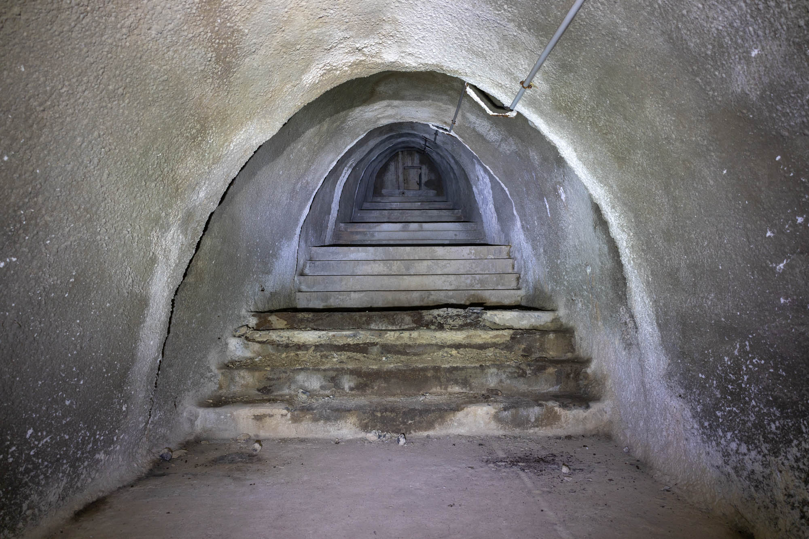
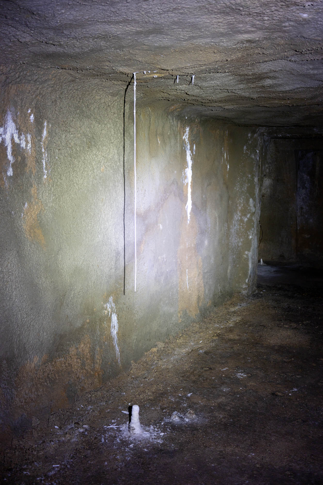
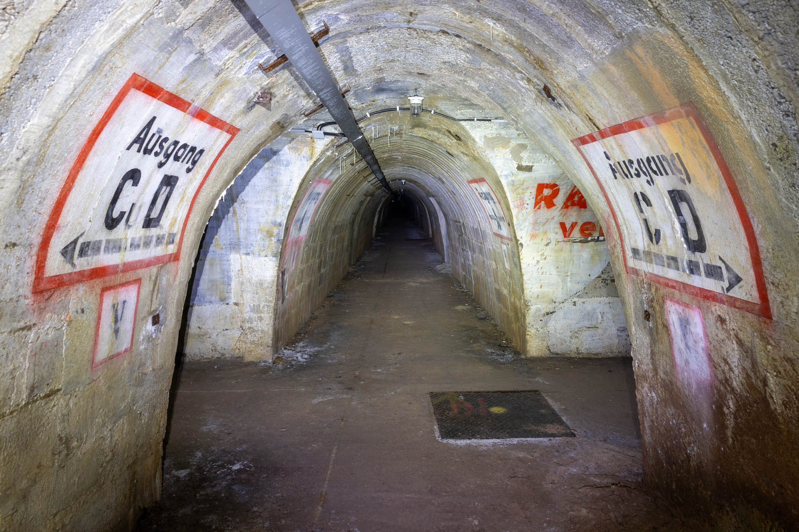
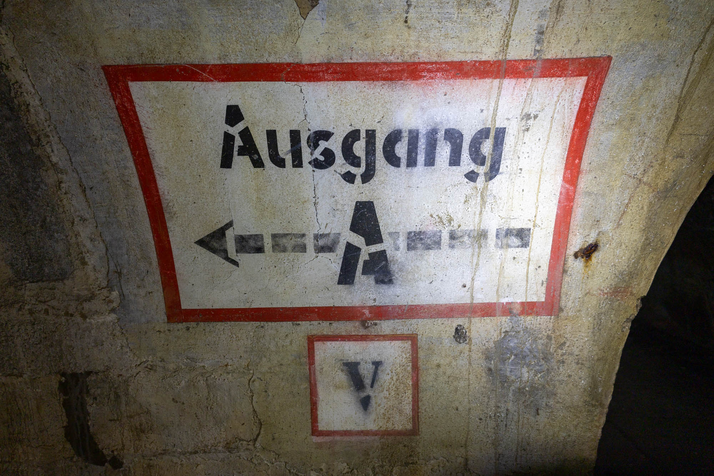
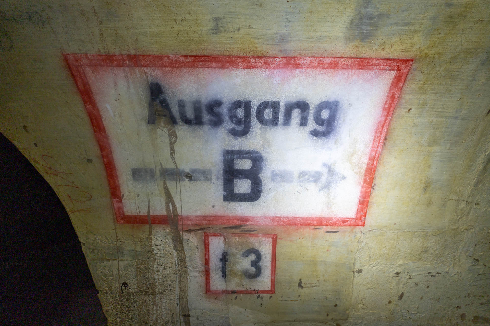
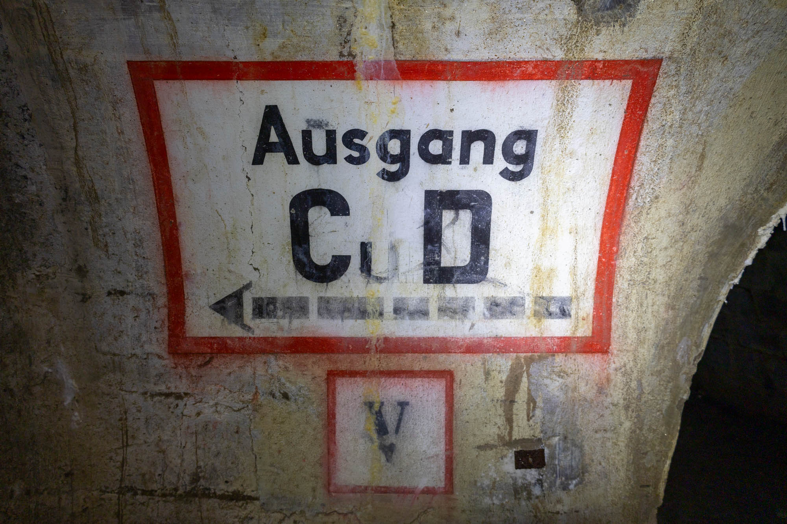
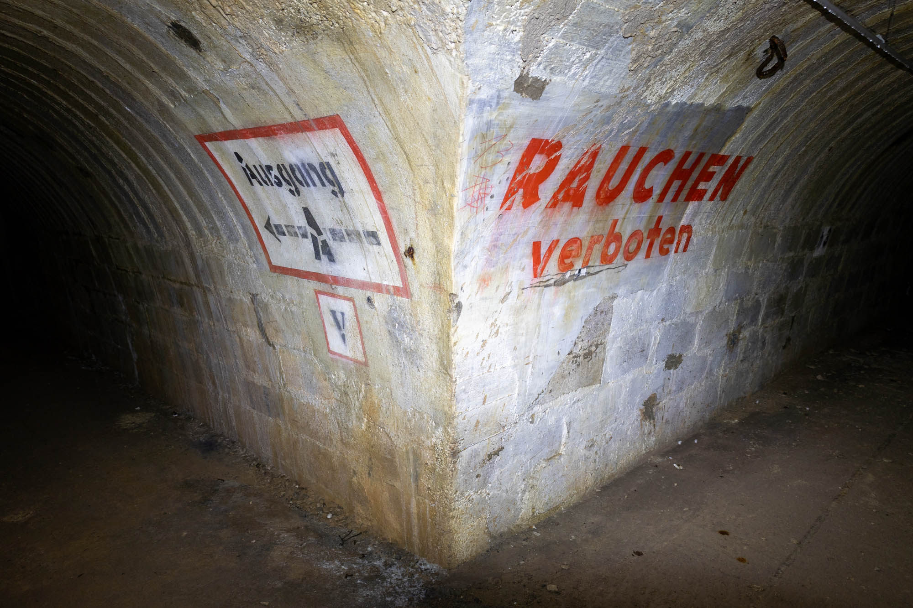
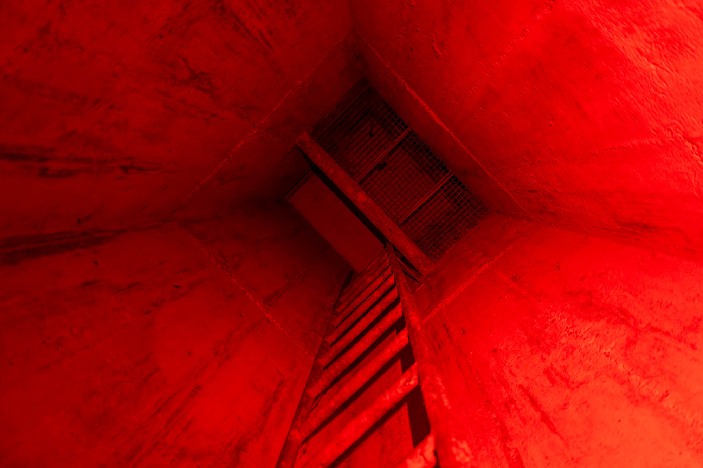

Hidden deep beneath the rolling vineyard hills and the graves of locals in a quiet rural cemetery lies a network of tunnels once used by factory workers seeking shelter during air raids.

Entry into this underground shelter is via an emergency exit room's air vent, which is located within the town's cemetery. Multiple apartments face this exit building, so in the dusk hours I used the red light to enter and exit in hopes of avoiding any unwanted attention. This red illumination visually bookended my visit since squeezing through the vent took longer than expected.


Quite close to the exit, down a side hallway, is one of the most impressive stalactites I've ever seen. Drip by drip, sediment has reached two-thirds of the way to the floor since the shelter's renovation in the 1970s. Fingers crossed this is protected by future explorers.

The highlight of this bunker, and what drew me to find the location and visit, was the iconic signage. Painted in black, white, and red and displayed at most major intersections in this bunker are clear "AUSGANG" directions to each of the exits. In large red letters, "RAUCHEN VERBOTEN" (no smoking) can also be found on some of the key walls.
Shown in the video at 01:53 are two vertical signs saying "ABORT". This is early 20th-century German for toilets. After WWII, it began to sound old-fashioned or unpleasant, and was gradually replaced by Toilette or WC.




With only one way in and out (back up the ladder and through the air vent) I exited back into the cemetery at the end of my explore.
